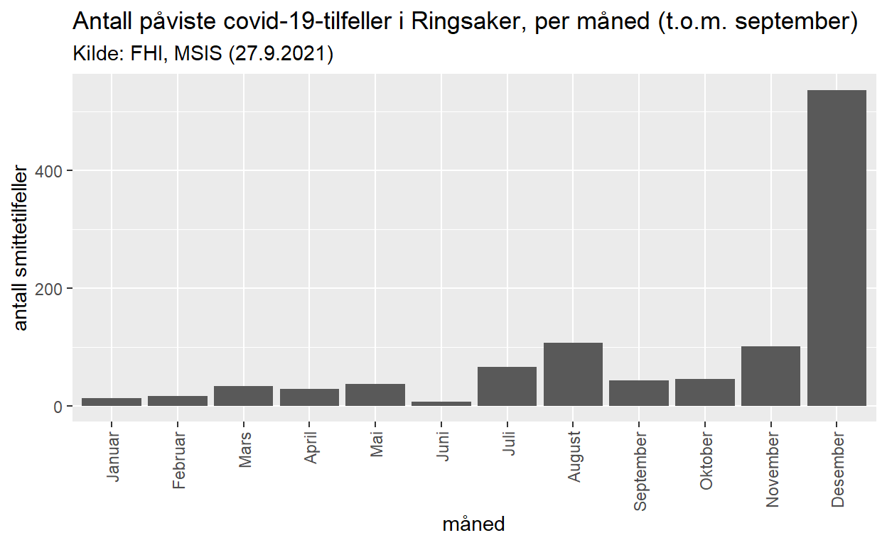
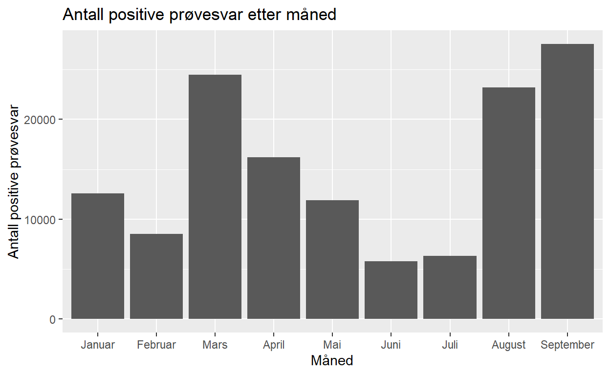
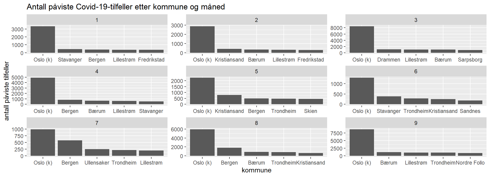
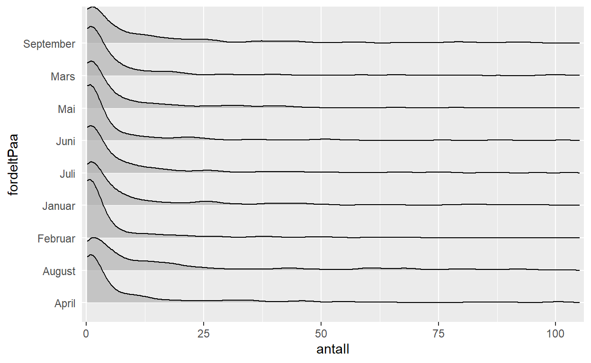

En titt på hvordan en kan hente data om koronatilfeller fra FHIs MSIS-nettside.
kartlegge situasjonen i kommunalt barnevern har vært en av oppgavene jeg har hatt i Bufdir. Et stadiig tilbakevendende spørsmål vi har fått er hvordan smittetall og smittetrykk påvirker situasjonen. For å få noen grove tall på dette, har vi brukt FHIs åpne data om rapporterte tilfeller i meldingssystemet for smittsomme sykdommer.
På FHIs nettside publiseres innmeldte, påviste tilfeller av Covid-19 per måned, men oppdatert pr. dags dato. Det er mulig å fordele dataene blant annet på geografi.
For å kunne bruke disse dataene i analyser, er det kjekt å få dem lasta ned på et anna format. En liten kikk i konsollet avslører at dataene som vi er ute etter kommer fra et API. For å bruke API-et trenger vi egentlig bare å hente kodelista som FHI bruker for fylker og kommuner, og så bruke den til å lage en fryktelig lang URL.
#hent kodeverk for fylker og kommuner
url = "https://statistikk.fhi.no/api/msis/kodeverk/fylkerOgKommuner"
query_result = GET(url)Lista med enheter som kommer ned er heller rotete, og har uhensiktsmessige navn, så den må repareres og fikses litt.
enhetsliste = unnest(fromJSON(content(query_result,"text",encoding="UTF-8")), cols = kommuneListe, names_repair = "universal") %>%
rename(fhi_kid = id...2,
knr = verdi...3,
knavn = beskrivelse...4,
fhi_fid = id...5,
fnr = verdi...6,
fnavn = beskrivelse...7
) %>%
select(-bydelListe)
head(enhetsliste)# A tibble: 6 6
fhi_kid knr knavn fhi_fid fnr fnavn
<int> <chr> <chr> <int> <chr> <chr>
1 428242 4203 Arendal 15166 42 Agder
2 428270 4216 Birkenes 15166 42 Agder
3 428279 4220 Bygland 15166 42 Agder
4 428282 4222 Bykle 15166 42 Agder
5 428277 4219 Evje og Hornnes 15166 42 Agder
6 428248 4206 Farsund 15166 42 AgderInteressant nok har lista med enheter 358 observasjoner, 2 flere enn det er kommuner i Norge i dag. En av dem er 9999 - ukjent kommune, som er greit nok, men den siste? Jeg klarer ikke å plukke den ut i farta.
Uansett - videre til de faktiske dataene! Disse finner du på endepunktet etterDiagnoseFordeltPaaMaaned, som tar en hel haug med parametre. Det vi er interessert i er parametrene:
#spørremetode
temp_url = "https://statistikk.fhi.no/api/msis/etterDiagnoseFordeltPaaMaaned?fraAar=2021&tilAar=2021&diagnoseKodeListe=713&kommuneKodeListe=3411&summerDiagnose=false&summerAlder=false&summerKjonn=false&summerGeografi=false&summerSmittested=false&summerSmittemaate=false&summerMaaned=false"
query_result = GET(temp_url)
resultater = fromJSON(content(query_result,"text",encoding="UTF-8"))
#legger til en numerisk månedsverdi
resultater = mutate(resultater,
mnd = seq_along(fordeltPaa)
)
#lager en egen dataframe med måned-nr for seinere bruk...
df_mnd = select(resultater,fordeltPaa, mnd)
#så lager vi et enkelt plott
ggplot(data = resultater) +
geom_col(aes(x = fct_reorder(fordeltPaa, mnd), y = antall)) +
labs(x = "måned", y = "antall smittetilfeller", title = "Antall påviste covid-19-tilfeller i Ringsaker, per måned (t.o.m. september)", subtitle = "Kilde: FHI, MSIS (27.9.2021)") +
theme(axis.text.x = element_text(angle = 90, vjust = 0.5, hjust=1))
Dette er ikke spesielt anvendelig om du ønsker alle dataene for alle kommunene. Derfor er det greit å lage en funksjon, som bygger URL-en for deg, og tar kommunenummeret som input:
kommune_query_builder = function(kommunenr = "4216"){
temp_url = paste0(
"https://statistikk.fhi.no/api/msis/etterDiagnoseFordeltPaaMaaned?",
"fraAar=2021&tilAar=2021&",
"diagnoseKodeListe=713&",
"kommuneKodeListe=",
kommunenr,
"&",
"summerDiagnose=false&summerAlder=false&summerKjonn=false&summerGeografi=false&summerSmittested=false&summerSmittemaate=false&summerMaaned=false"
)
}Denne kan vi så kjøre, f.eks. inne i en for-loop, ved å hente kommunenummeret fra den tidligere oppsatte kommunenummer-lista:
enhetsliste = select(enhetsliste, knr, knavn, fnr)
smittetall = data.frame()
for(i in 1:nrow(enhetsliste)){
temp_query = kommune_query_builder(enhetsliste$knr[i])
temp_result = fromJSON(content(GET(temp_query),"text",encoding="UTF-8"))
if(length(temp_result)>0){
temp_result = bind_cols(enhetsliste[i,], temp_result)
smittetall = bind_rows(smittetall, temp_result)
}
Sys.sleep(1.5)
}
#legger på månedsnummeret
smittetall = left_join(smittetall, df_mnd, by = "fordeltPaa")
head(smittetall) knr knavn fnr tekst antall
1 4203 Arendal 42 Koronavirus med utbruddspotensial, Arendal 26
2 4203 Arendal 42 Koronavirus med utbruddspotensial, Arendal 49
3 4203 Arendal 42 Koronavirus med utbruddspotensial, Arendal 70
4 4203 Arendal 42 Koronavirus med utbruddspotensial, Arendal 100
5 4203 Arendal 42 Koronavirus med utbruddspotensial, Arendal 70
6 4203 Arendal 42 Koronavirus med utbruddspotensial, Arendal 88
fordeltPaa mnd
1 Januar 1
2 Februar 2
3 Mars 3
4 April 4
5 Mai 5
6 Juni 6Dermed har vi et datasett som viser smittetallene for alle norske kommuner, totalt for de første 8 og trekvart månedene i 2021. Skjønt - ikke alle kommuner. Litt enkel matte tilsier at det burde være 12 * 358 = 4 296 observasjoner her hvis alle kommuner og alle måneder var med. Men det er kun 4 224. Så antakeligvis mangler det en del observasjoner for kommuner som av ulike grunner ikke har rapportert, eller ikke har tilfeller.
Vi lager derfor en enkel dataframe som har alle kommuner og alle måneder:
df_komplett = bind_rows(enhetsliste, df_mnd) %>%
expand(., nesting(knr, knavn, fnr), nesting(fordeltPaa, mnd)) %>%
filter(is.na(knr) == FALSE & is.na(fordeltPaa) == FALSE)
df_komplett = left_join(df_komplett, smittetall)
#tar en liten sjekk av at alle tilfellene ble med over
sjekksum_1 = sum(smittetall$antall)
sjekksum_2 = sum(df_komplett$antall, na.rm = TRUE)Her har vi nå NA-verdier for kommuner som det ikke fantes data for hos FHI. Vi vet ikke om disse manglet data fordi de hadde 0 tilfeller, eller fordi de ikke rakk å rapportere (Aftenposten hadde en sak i november 2020 om hvor krevende det var for helsepersonell å rapportere tilfeller til MSIS).
Vi begrenser også datautvalget til data fra januar til og med september 2021.
df_komplett = filter(df_komplett, mnd < 10)Totalt dreier det seg om 139 518 tilfeller av Covid-19 i disse 9 månedene. Når vi summerer etter måned, ser vi at antall tilfeller er størst i september. Dette er en god indikasjon på hvorfor prøvesvarene er en dårlig indikator på hvor farlig pandemien er og var aleine - etter som flere og flere får vaksine, vil andelen personer som blir alvorlig sjuke, gå ned blant de smitta.
sum(df_komplett$antall, na.rm = TRUE)[1] 136597temp = group_by(df_komplett, mnd) %>%
summarise(antall = sum(antall, na.rm = TRUE)) %>%
left_join(., df_mnd)
ggplot(data = temp) +
geom_col(aes(x = fct_reorder(fordeltPaa, mnd), y = antall)) +
labs(x = "Måned", y = "Antall positive prøvesvar", title = "Antall positive prøvesvar etter måned")
Hvilke kommuner hadde flest smittetilfeller i de ulike månedene?
Fordelingsplot
#velger de fem øverste kommunene i hver måned
temp = group_by(df_komplett, mnd) %>%
slice_max(antall, n = 5, with_ties = FALSE) %>%
arrange(mnd)
ggplot(data = temp) +
geom_col(aes(x = tidytext::reorder_within(knavn, desc(antall), mnd), y = antall)) +
tidytext::scale_x_reordered() +
facet_wrap(vars(mnd), scales = "free") +
labs(x = "kommune", y = "antall påviste tilfeller", title = "Antall påviste Covid-19-tilfeller etter kommune og måned")
Som vi ser er smittetallene stort sett avhengige av folketall - Oslo ligger alltid øverst, og så kommer Bergen og Trondheiim inn på lista under, med diverse andre kommuner i samme område inn og ut av lista, særlig på stlandsområdet. De ti kommunene med flest tilfeller, står for over 50 % av alle tilfeller - dette inkluderer Oslo, som står for 28 % av tilfellene.
Noen kommuner har ikke hatt noen positive svar: Det er først og fremst snakk om Røyrvik, som står oppført med 0 positive svar fra januar til september. Så er det også 5 kommuner som det mangler informasjon for i 1 eller flere måneder - Utsira, Vevelstad, Skjerstad, Osen og Leka.
temp = group_by(df_komplett, knr) %>%
summarise(antall = sum(antall, na.rm = TRUE)) %>%
arrange(desc(antall)) %>%
mutate(
har_tilfeller = ifelse(antall > 0, TRUE, FALSE),
kum_andel = cumsum(antall) / sum(antall, na.rm = TRUE)
) %>%
left_join(., enhetsliste)
tabell = filter(temp, is.na(antall) | har_tilfeller == FALSE)
knitr::kable(tabell)| knr | antall | har_tilfeller | kum_andel | knavn | fnr |
|---|---|---|---|---|---|
| 1151 | 0 | FALSE | 1 | Utsira | 11 |
| 1816 | 0 | FALSE | 1 | Vevelstad | 18 |
| 1842 | 0 | FALSE | 1 | Skjerstad | 18 |
| 5020 | 0 | FALSE | 1 | Osen | 50 |
| 5043 | 0 | FALSE | 1 | Røyrvik | 50 |
| 5052 | 0 | FALSE | 1 | Leka | 50 |
Et forsøk på å se på fordelingene for hver måned, gir ikke så veldig mye utover å slå fast at fordelinga er veldig høyreskjeiv - de aller fleste kommunene har hatt et fåtall smittetilfeller. Hvis en skal få noe mer ut av disse dataene, bør en kanske se dem sammen med befolkningstall.
ggplot(data = df_komplett, aes(x = fordeltPaa, y = antall)) +
geom_jitter(colour = "steelblue", alpha = 0.3) +
geom_boxplot(alpha = 0) ggplot(data = df_komplett, aes(x = antall, y = fordeltPaa)) +
geom_density_ridges(alpha = 0.7) +
scale_x_continuous(limits = c(0, 105), expand = c(0,1)) +
theme(axis.ticks.y = element_blank()) 